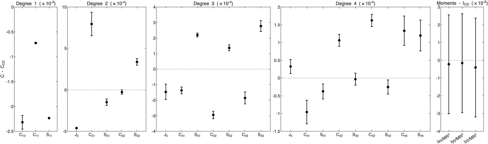
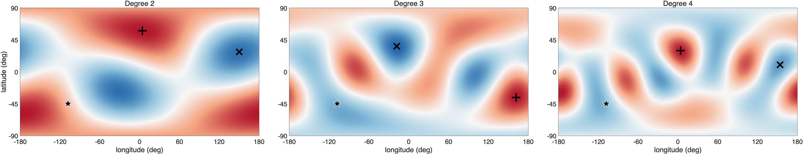
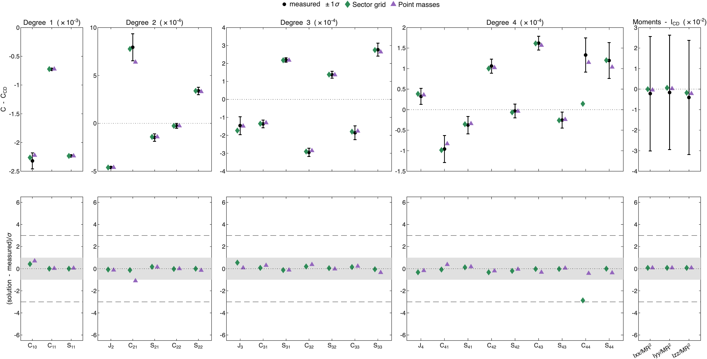
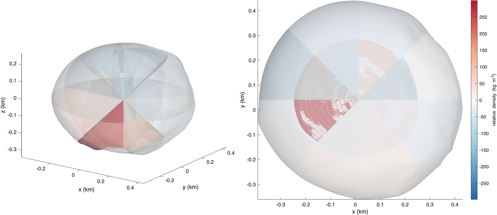
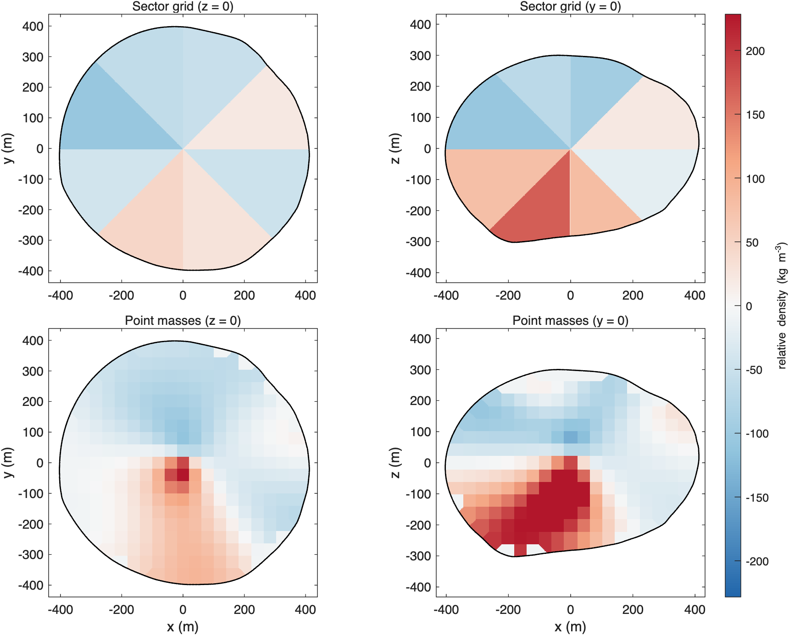
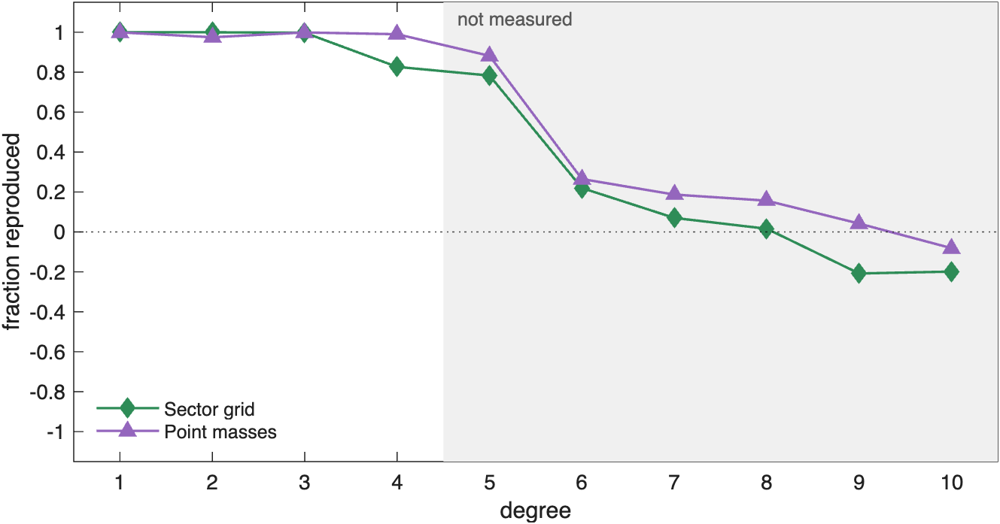

ROB-DATA2: Didymos#
Last edited October 28, 2026
ROB-DATA2 is the package where shapes fail. The center of mass is 2.3 m off center toward the south, degree 2 is tilted 58° from the equator, and degree 3, small in the other Didymos packages, is large. No model built from a core, a torus and a layer comes near the measurements, not even with the search adding compact masses. Two solutions that assume no shapes do fit: a grid of 32 sectors and the point masses. They agree closely with each other, on a dense region below the equator toward −x and −y and a light region above it toward +y. Their excess centers are 10 m apart and their relative densities correlate 0.78. Both predict most of degree 5, which neither was fitted to.
| Kind | Model | Parameters | Reduced χ² | p | AIC | Exact values, degrees 1–4 | Exact values, degrees 5–10 |
|---|---|---|---|---|---|---|---|
| Sector grid | 1 × 4 × 8 | 25.1 | 1.05 | 0.40 | 63.8 | 1.00 | 0.29 |
| Point masses | 2667 points | 30.4 | 0.57 | 0.80 | 65.1 | 1.00 | 0.40 |
| Search | core, torus, layer, 3 compact masses | 21.0 | 13.43 | < 0.01 | 270.2 | 0.96 | −0.89 |
| Components | core, torus, layer | 9.0 | 20.23 | < 0.01 | 604.8 | 0.91 | −0.43 |
The best solution of each kind, by AIC (bold: the lowest). Parameters: the effective number of parameters. Exact values: the fraction of ROB's exact coefficients a solution reproduces, over the measured degrees 1–4 and over degrees 5–10, which were not fitted (1: all; 0: no better than constant density; negative: worse). See How to read these pages.
1. What the measurements show#

| Measurement | C − C_CD | 1σ | In σ | What it says |
|---|---|---|---|---|
| −17 | center of mass toward −z (south) | |||
| −58 | center of mass toward −x | |||
| −171 | center of mass toward −y | |||
| +53 | lower: mass toward the poles or the center | |||
| +6 | mass toward +x in the north, −x in the south | |||
| −4 | mass toward −y in the north, +y in the south | |||
| +9 | mass toward longitudes 45° and −135° | |||
| −6 | order 1, strongest at longitudes 122° | |||
| +18 | order 1, strongest at longitudes 122° | |||
| −13 | order 2, strongest at longitudes −102°, 78° | |||
| +7 | order 2, strongest at longitudes −102°, 78° | |||
| −5 | order 3, strongest at longitudes −79°, 41°, 161° | |||
| +8 | order 3, strongest at longitudes −79°, 41°, 161° | |||
| +6 | order 2, strongest at longitudes −1°, 179° | |||
| +10 | order 3, strongest at longitudes −123°, −3°, 117° | |||
| +3 | order 4, strongest at longitudes −170°, −80°, 10°, 100° |
The measurements more than 3σ from constant density.
The center of mass is 2.3 m from the center of figure, four times as far as in ROB-DATA1 and ROB-DATA3: toward −y (171σ), −x (58σ) and the south (17σ). is 53σ lower than at constant density: mass has moved toward the poles or the center. and are not zero, so the anomaly is not symmetric about the equator, and every order of degree 3 is measured.
2. Where the mass is#

Degree 2 puts the excess at latitude −58°, longitude −176°, and at the opposite point: an axis tilted 58° from the equator. The center of mass points to −45°, −108°, the southern side. Degree 3 has its excess at −36°, 162° and its deficit at the opposite point. Every degree points to the southern hemisphere, toward longitudes between −110° and 180°.
3. How well each solution fits#

The sector grid and the point masses match every measured coefficient within 3σ, with 25 and 30 effective parameters. They are 1.3 apart in AIC, a tie. The models with components do not fit. The best of them, a core placed along the center-of-mass offset with a tilted torus and a layer, has a reduced χ² of 20. The search adds three compact masses to a core, torus and layer and still has a reduced χ² of 13. A core can move the center of mass and a torus can change , but neither makes a tilted elongation together with a large degree 3.
4. The sector grid#

Each of the 32 sectors reaches from the center to the surface. The densest are south of −45° latitude: +300 ± 54 kg/m³ toward longitudes −180° to −135°, +170 ± 53 toward 135° to 180° and +133 ± 67 toward 45° to 90°. The lightest is between 0° and 45° latitude toward longitudes 135° to 180° (−106 ± 10 kg/m³). The sectors north of 45° are not resolved. A grid of two shells (2 × 4 × 8) gives the same outer densities and leaves the inner shell near zero: the measurements do not ask for any structure in the inner half.
5. Point masses and the sector grid side by side#

| Solution | Mass moved (% of M) | Excess centered at (m) | Deficit centered at (m) |
|---|---|---|---|
| Sector grid | 0.9 | (−72, −64, −108) | (−24, 98, 53) |
| Point masses | 1.0 | (−63, −64, −103) | (−11, 100, 59) |
| Correlation | Sector grid | Point masses |
|---|---|---|
| Sector grid | 1.00 | 0.78 |
| Point masses | 0.78 | 1.00 |
Mass moved: the mass above the bulk density, as a percentage of the mass of the body. Excess and deficit centers are from the center of figure. Correlation: of the relative densities of the two solutions, 41 m cell by 41 m cell.
The two solutions are built differently: 32 large blocks against 2,667 point masses, with different regularization. They still place the anomaly in the same way. Each moves about 1% of the mass of the body. Each centers its excess about 140 m from the center toward latitude −49°, longitude −135°, within 10 m of the other, and its deficit about 115 m toward +y and the north. On the y = 0 plane the point masses gather the excess into a lobe 100 to 250 m below the center, where the sector grid has its densest southern sectors.
6. Against ROB's exact values#

Both solutions reproduce degrees 1 to 4 and predict degree 5, which was not fitted (78% for the sector grid, 88% for the point masses). From degree 6 on both fall toward zero. Over degrees 5 to 10 the point masses reproduce 40% and the sector grid 29%. The large-scale structure the two agree on is real; its finer form is beyond what degrees 1 to 4 can show.